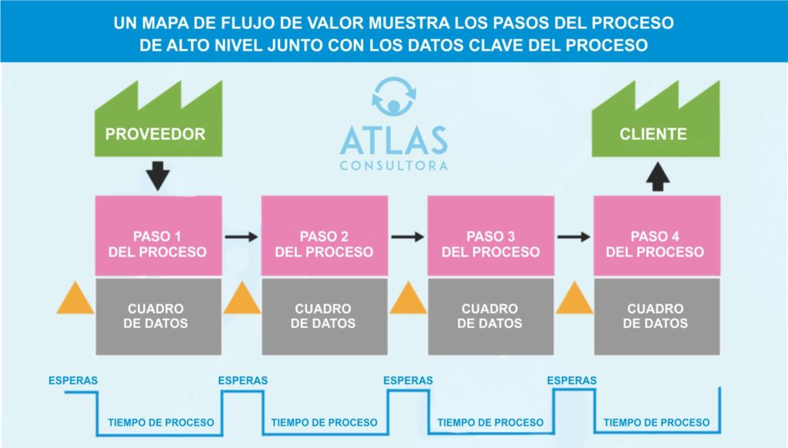

1.-Organizaciones y personas
Esta dimensión de la gestión de servicios abarca los recursos humanos y las estructuras organizativas necesarias para gestionar y realizar el trabajo requerido para prestar y dar soporte a los servicios (incluido el servicio de asistencia técnica de TI). En las Cuatro Dimensiones de la Gestión de Servicios, la dimensión de organizaciones y personas no se limita al personal de TI.
Go somewhere
2.-Información y tecnologías
Esta dimensión de la gestión de servicios se refiere a la información y la tecnología que dan soporte a los servicios y a las prácticas de gestión de servicios. Abarca la gestión de la información, la gestión del conocimiento (y las bases de conocimiento), las herramientas de comunicación y colaboración, y la gestión de la seguridad de la tecnología y la información. También incluye la infraestructura, las aplicaciones y los datos asociados a los servicios y a su gestión.
Go somewhere3.-Socios y proveedores
Esta dimensión de la gestión de servicios se refiere a las relaciones de una organización con otras organizaciones involucradas en el diseño, desarrollo, entrega, soporte y mejora continua de los servicios. Incluye contratos y acuerdos, gestión de proveedores , gestión de relaciones y la integración de terceros en la cadena de valor del servicio (CVS). Los socios y proveedores deben ser considerados cocreadores de valor, ya que no solo proporcionan un producto o servicio, sino que participan activamente en la generación de valor para las partes interesadas.
Go somewhere
Flujos de valor y proccesos
Esta dimensión de la gestión de servicios abarca cómo las diferentes partes de una organización deben trabajar de forma coordinada para generar valor a través de productos y servicios. Las organizaciones logran esto definiendo, gestionando y mejorando los procesos y los flujos de valor . Es fundamental que las organizaciones visualicen el flujo de valor para comprender cómo se crea y se entrega dicho valor. Esta actividad incluye mapear todos los pasos, procesos y puntos de contacto que contribuyen a la creación de valor.
Go somewhere